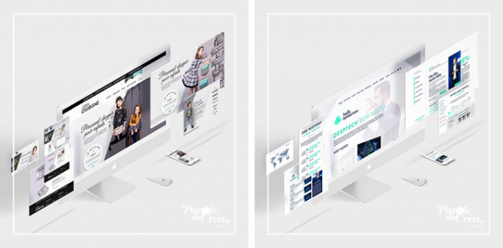

Découvrez aussi nos 5 conseils pour faire un Webdesign efficace et unique !
Besoin d’aide pour la création de vos supports de communication ? Venez découvrir nos services.
N’hésitez pas à suivre l’actualité de Creads sur nos comptes Instagram, Facebook et LinkedIn.
Et si vous avez aimé l’article, partagez-le autour de vous !
L’UX Design, qu’est-ce que c’est ?
UX Design signifie User Experience Design. En Français, il s’agit du design de l’expérience utilisateur. A ne pas confondre avec l’UI Design, qui est une notion complémentaire et qui signifie design d’interface utilisateur. L’UX Design est une discipline qui prend en compte et anticipe les attentes et les besoins de l’utilisateur pour créer un site web ou une application. L’objectif final est de rendre un site accessible, facile à prendre en main et surtout efficace.
Pour savoir si vos outils numériques ont été bien pensés, il suffit de poser 3 questions à
votre webdesigner. Ces questions ont été imaginées par Larry Marine, designer et
spécialiste de l’UX :
1) Quelle est votre stratégie d’UX ?
2) Quelle expérience utilisateur essayez-vous de mettre en place ?
3) Par quels moyens pensez-vous y arriver ?
Si vous ou votre créatif ne parvenez pas à y répondre, c’est certainement que de nombreuses
améliorations restent à faire. Ce qui est très prometteur, soyons positifs.

Pourquoi utiliser l’UX Design ?
L’UX Design consiste à penser et concevoir un site web de la meilleure manière possible pour que l’utilisation soit optimale. Ainsi, on s’intéresse donc au design d’un site et à l’utilisation que va en faire l’internaute avant même de penser au développement. Il suffit de se rappeler des mauvaises expériences passées sur un site pour comprendre ! Par exemple, des minutes perdues à chercher des pages ou des catégories… L’UX Design permet d’éviter tous ces problèmes et de rendre heureux les Responsables Marketing et Communication. Car un site non ergonomique, c’est une perte de trafic !
Tout le monde peut faire de l’UX Design ?
Surtout pas ! C’est Donald Norman, employé d’Apple en 1995, qui est le premier à revendiquer le titre de « User Experience Architect ». En France, le métier se développe doucement et les ressources sont encore rares. L’UX design est une catégorie du graphisme à part entière. Il n’est pas simple de réaliser une expérience utilisateur optimisée sans connaître parfaitement les caractéristiques techniques variables des multiples supports : desktop, smartphone, tablette, objet connecté, etc. De nombreux designers de sites Web et d’applications construisent leurs interfaces en tenant compte des usages et technologies comme la navigation tactile ou la rotation portrait/paysage sur mobiles. Il existe aussi des écoles qui forment les étudiants au métier d’UX designers.
Comment travailler avec un(e) UX designer ?
Face à la complexité du web et en raison de l’importance de l’interaction et de l’optimisation des plateformes web et mobiles, il est judicieux de faire appel à un UX designer. Celui-ci aura pour rôle de mobiliser un large éventail de méthodologies et d’outils pour modéliser les attentes et les comportements des utilisateurs, ainsi que les solutions de design qu’il peut apporter.
Lien vers l'article